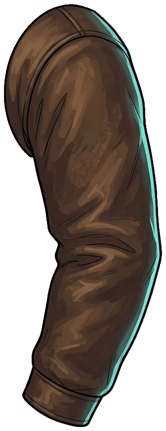
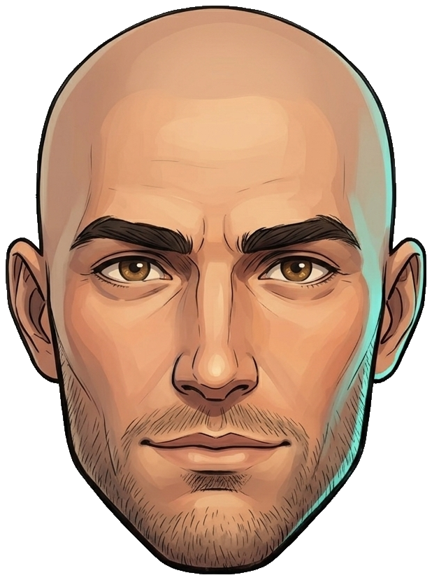

1. Approved Gate 1 Master Bust (Reference)

2. Assembled from Individually Generated Components







3. Quality Control Audit Findings
1. Hair Silhouette & Fit Mismatch
The separately generated front hair (
03_front_hair) has a different part line, curtain-bangs geometry, and detached sideburn tufts that fail to wrap the bald cranium of 02_head_face_base, leaving exposed skull temples and floating hair locks.
2. Back Hair 180° Perspective Inversion
01_back_hair was generated as the back of a head facing away from the camera (including rear ears and rear neck skin), producing double-ears and conflicting hair spikes behind the face.
3. Reversed Rim Lighting Direction
On the Master Bust, the cyan rim light is on the viewer's left. On
02_head_face_base and 07_upper_arm_right, the generator flipped the cyan rim light to the viewer's right, while 05_jacket_torso omitted it entirely.
4. Neck Perspective & Style Drift
04_neck rendered in a worm's-eye anatomical etching style with exposed tracheal rings and an upward chin shelf that clashes with the straight-on head and henley shirt.
5. Collar & Shoulder Geometry Conflict
05_jacket_torso invented a stand-up leather collar and rigid shoulder pauldrons. Layering 06_shearling_collar and 07_upper_arms on top creates double-collars and protruding pauldron ledges.